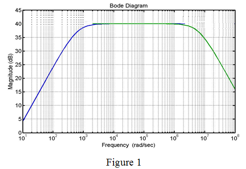

Step 1:
Refer to Table in question 1.70 in the textbook.
From the values in the table, the circuit is low pass circuit at high frequencies and high pass circuit at low frequencies.
From the table, the maximum gain is  .
.
Cut-off frequency is the frequency at which gain is less than  from the maximum value.
from the maximum value.
Determine the gain at cut-off frequency.
Thus,  frequency of the high pass circuit is,
frequency of the high pass circuit is,
Step 2:
Determine the expression for gain of high pass circuit.
 is the dc gain.
is the dc gain.
Determine the DC gain.
Substitute  for f.
for f.
Therefore, the dc gain, is .
Step 3:
Determine the frequency at which gain is equal to zero.
Step 4:
Simplify the equation further.

Step 5:
Therefore, frequency at which gain is is .
Determine the expression for gain of low pass circuit.
is the dc gain
Determine the gain at cut-off frequency.
Thus, frequency of the low pass circuit is,
Step 6:
Determine the DC gain.
Substitute for f.
Step 7:
Therefore, the transfer function is,
…… (1)
Substitute for  in the equation (1).
in the equation (1).
Apply logarithm on both sides.
Thus, the magnitude at the frequency of is .
Step 8:
Thus, the transfer function is,
Substitute for  in the equation.
in the equation.
Step 9:
Apply logarithm on both sides.
Therefore, the magnitude at the frequency of is .
Step 10:
Determine the frequency at which gain is equal to zero.

Step 11:
Simplify the equation further.
Thus, the frequency at which gain is is .
Step 12:
Write the modified table of the frequency response.
Table 1
| | |
| | 0 |
| 10 | 20 |
| | 37 |
|  | 40 |
|  | 40 |
|  | 40 |
|  | 37 |
| | 20 |
|  | 0 |
Step 13:
Sketch the magnitude frequency response plot.

Thus, the magnitude frequency response is drawn.